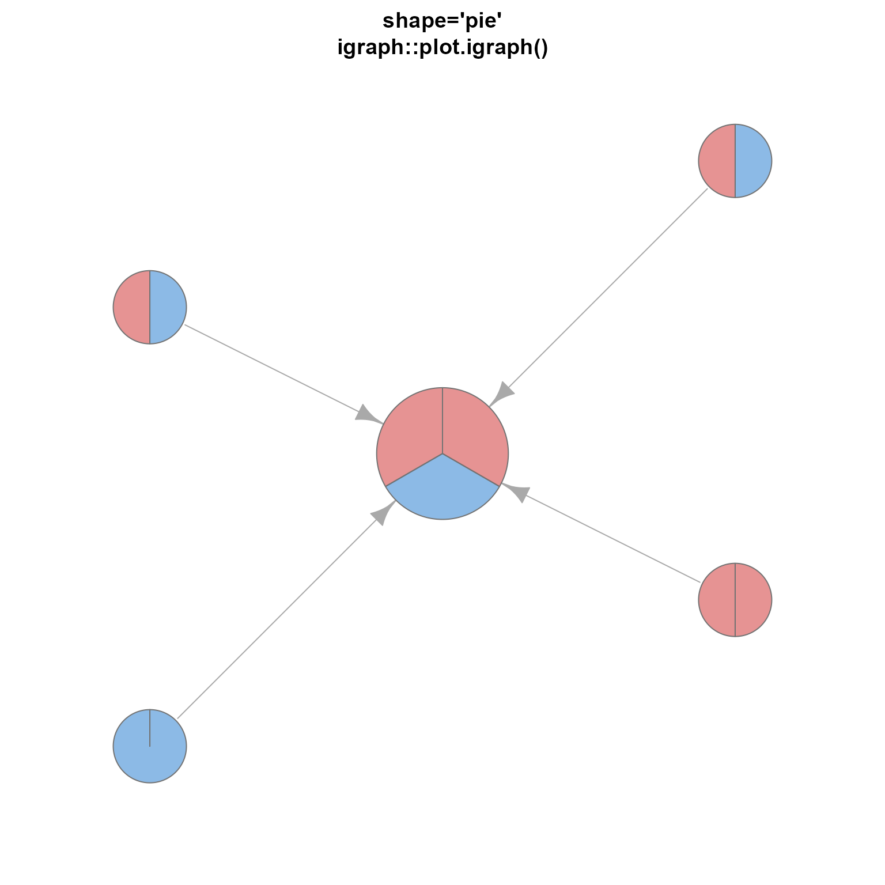
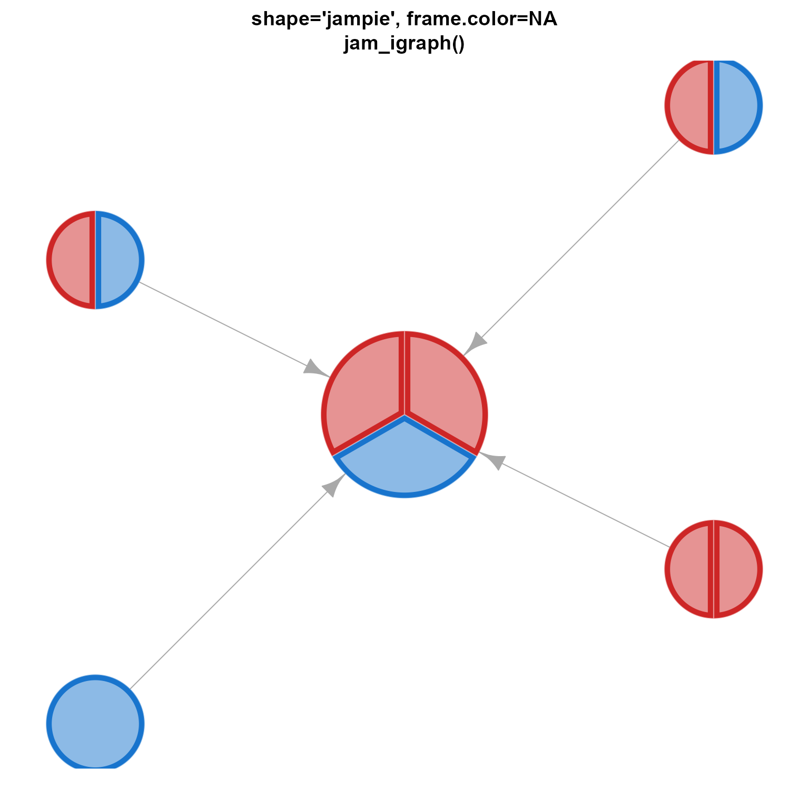
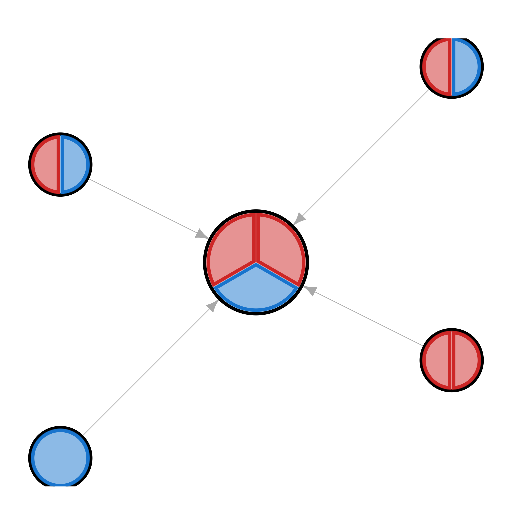
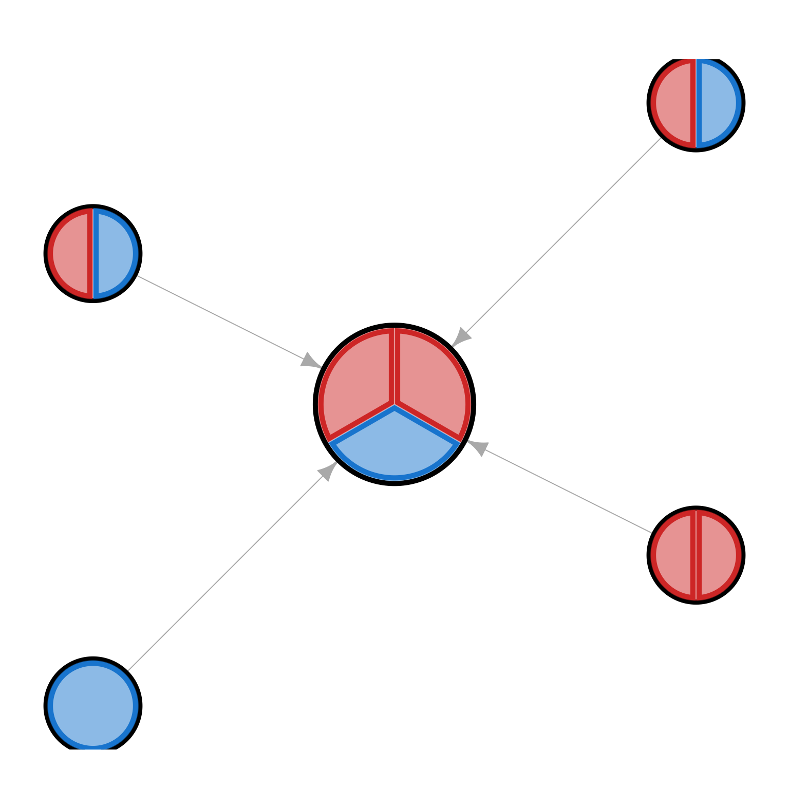

custom igraph vertex shape jampie
clip function for igraph vertex shape jampie
Usage
shape.jampie.plot(coords, v = NULL, params)
shape.jampie.clip(coords, el, params, end = c("both", "from", "to"))Details
This function is a vectorized replacement for plotting
vertex shape "pie" in much more efficient manner.
It is substantially faster to use shape.jampie.plot() than
default igraph plotting, even for only 20 pie nodes, the speed
becomes even more dramatically faster for larger networks with
200+ nodes. Minutes reduced to 1-2 seconds rendering time.
Pie nodes with only one large
100% wedge no longer display the small line from origin,
which is a change and improvement from default igraph rendering.
Attribute vertex.pie.border can be used to draw a border around
each pie wedge, for each node. It should be a list with
lengths(vertex.pie.border) equal to lengths(vertex.pie).
To disable, use pie.border=NA on the entire attribute, or individual
nodes.
Attribute vertex.frame.color can be used to draw a single circular
border around the entire pie node. The length(vertex.frame.color)
should equal the number of nodes in the graph, for example
determined with igraph::vcount(g).
Note that frame.color is drawn for each node after the pie
wedges, on top of pie.border if defined, so it is
recommended to use only one form of border for each node.
Each pie node is drawn completely, in order: pie wedges including optional
pie.border outline for each pie wedge, then frame.color
around the entire node circle; then the next pie node is drawn.
This ordering ensures each entire pie node will overlap, or be
overlapped by other nodes, without artifacts of the frame.color
being shown on top of pie nodes that are otherwise beneath
visibility.
To disable pie.border set to NA with vertex.pie.border=NA
or V(g)[[2]]$pie.border <- NA.
To disable frame.color set to NA with vertex.frame.color=NA
or V(g)[2]$frame.color <- NA.
This function defines the clipping function for custom igraph vertex shape jampie.
See also
Other jam igraph shapes:
jam_mypie(),
shape.coloredrectangle.plot(),
shape.ellipse.clip(),
shape.ellipse.plot()
Other jam igraph shapes:
jam_mypie(),
shape.coloredrectangle.plot(),
shape.ellipse.clip(),
shape.ellipse.plot()
Examples
# prepare example igraph object
am <- matrix(ncol=5, nrow=5,
data=0,
dimnames=list(LETTERS[1:5], LETTERS[1:5]))
am[2:5, 1] <- 1;
g1 <- igraph::graph_from_adjacency_matrix(am)
igraph::graph_attr(g1, "layout") <- cbind(x=c(0, 1, 1, -1, -1),
y=c(0, 1, -0.5, 0.5, -1))
colorset <- c("firebrick3", "dodgerblue3");
vseq <- seq_len(igraph::vcount(g1));
vsizes <- c(3, 2, 2, 2, 1);
igraph::V(g1)$pie <- lapply(vseq, function(i){
rep(1, vsizes[i])
})
set.seed(1);
igraph::V(g1)$pie.border <- lapply(vseq, function(i){
sample(colorset,
replace=TRUE,
size=vsizes[i])
})
igraph::V(g1)$pie.color <- lapply(vseq, function(i){
jamba::alpha2col(alpha=0.5,
igraph::V(g1)$pie.border[[i]])
})
igraph::V(g1)$pie.lwd <- rep(5, igraph::vcount(g1))
igraph::V(g1)$frame.lwd <- c(2, 1, 1, 1, 1)*2;
igraph::V(g1)$frame.color <- NA
igraph::V(g1)$size <- c(45, 25, 25, 25, 25);
igraph::V(g1)$shape <- "jampie";
par("mar"=c(2, 2, 3, 2))
igraph::plot.igraph(g1, vertex.label="",
vertex.shape="pie", vertex.frame.color="grey45",
main="shape='pie'\nigraph::plot.igraph()")

jam_igraph(g1, vertex.label="",
main="shape='jampie', frame.color=NA\njam_igraph()")

jam_igraph(g1, vertex.label="",
vertex.frame.lwd=2,
main="shape='jampie', frame.color='black'\njam_igraph()",
vertex.shape="jampie", vertex.frame.color="black")
 jam_igraph(g1, vertex.label="", vertex.frame.color="black")

# print pie.color data
print(igraph::vertex_attr(g1)$pie.color);
#> [[1]]
#> [1] "#CD26267F" "#1874CD7F" "#CD26267F"
#>
#> [[2]]
#> [1] "#CD26267F" "#1874CD7F"
#>
#> [[3]]
#> [1] "#CD26267F" "#CD26267F"
#>
#> [[4]]
#> [1] "#CD26267F" "#1874CD7F"
#>
#> [[5]]
#> [1] "#1874CD7F"
#>
jam_igraph(g1, vertex.label="", vertex.frame.color="black")

# print pie.color data
print(igraph::vertex_attr(g1)$pie.color);
#> [[1]]
#> [1] "#CD26267F" "#1874CD7F" "#CD26267F"
#>
#> [[2]]
#> [1] "#CD26267F" "#1874CD7F"
#>
#> [[3]]
#> [1] "#CD26267F" "#CD26267F"
#>
#> [[4]]
#> [1] "#CD26267F" "#1874CD7F"
#>
#> [[5]]
#> [1] "#1874CD7F"
#>